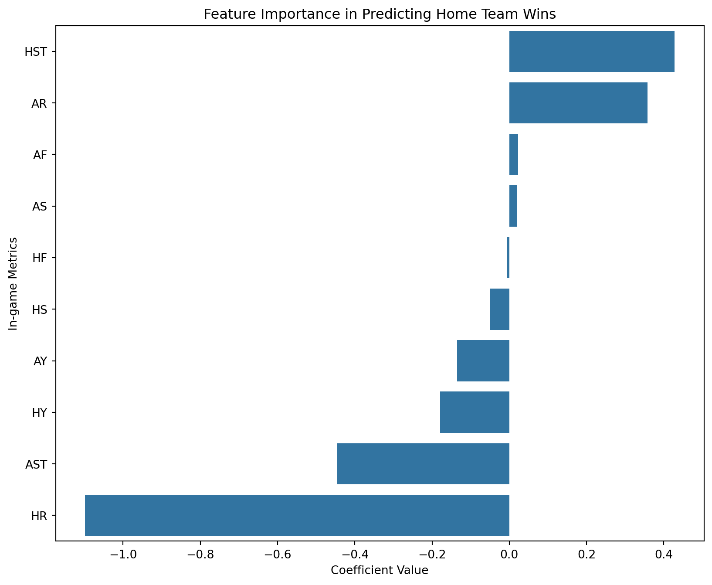
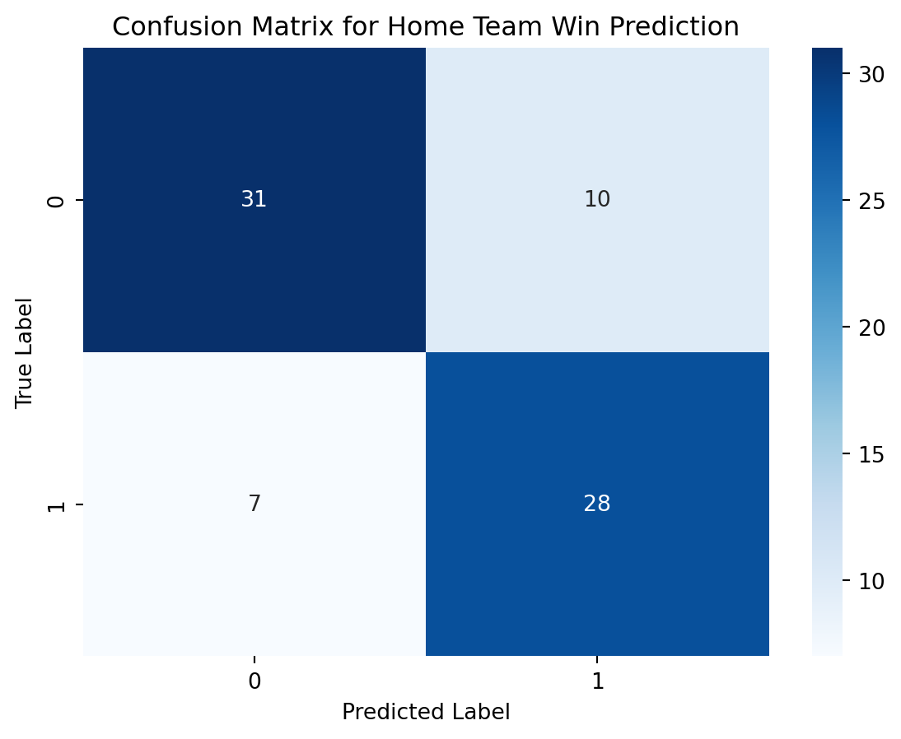
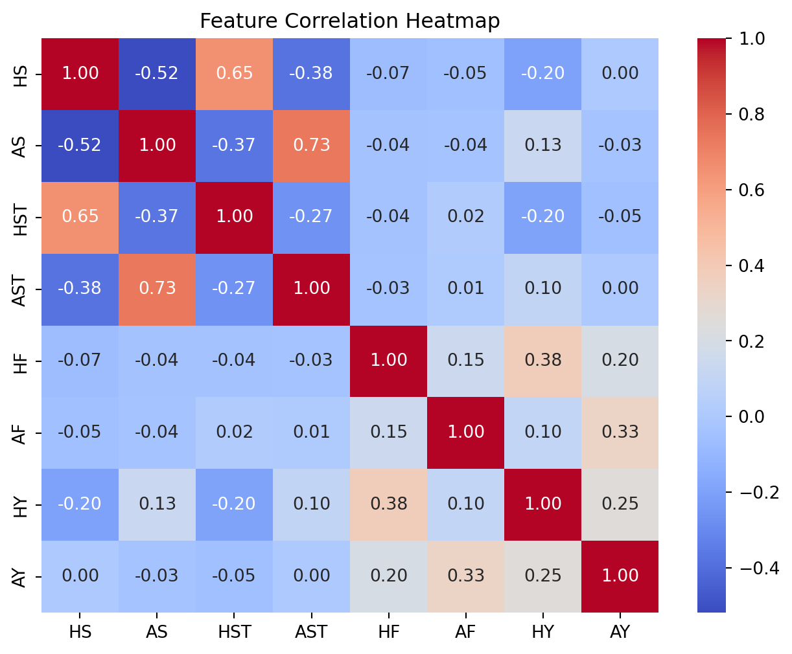

import pandas as pd
import matplotlib.pyplot as plt
import seaborn as sns
from sklearn.model_selection import train_test_split
from sklearn.linear_model import LogisticRegression
from sklearn.metrics import confusion_matrix, accuracy_score
# Load the dataset
df = pd.read_csv('data/soccer21-22.csv')
# Creating a binary target variable 'Result' where 1 represents a home win ('H') and 0 otherwise
df['Result'] = (df['FTR'] == 'H').astype(int)
# Feature selection
features = ['HS', 'AS', 'HST', 'AST', 'HF', 'AF', 'HY', 'AY', 'HR', 'AR']
X = df[features]
y = df['Result']
# Splitting the dataset into training and testing sets
X_train, X_test, y_train, y_test = train_test_split(X, y, test_size=0.2, random_state=42)
# Logistic Regression model
model = LogisticRegression(max_iter=1000)
model.fit(X_train, y_train)
# Predictions
y_pred = model.predict(X_test)
# Evaluating the model
accuracy = accuracy_score(y_test, y_pred)
cm = confusion_matrix(y_test, y_pred)Premier League Performance Metrics and Results: A Dynamic Analysis
INFO 523 - Spring 2023 - Project 1
Abstract
This study explores how in-game data, like as shots on goal, fouls, and cards, affect match outcomes by looking at 380 matches from the English Premier League’s 2021–2022 season. We examine the critical impact these variables play in deciding whether a home or away side wins using Evan Gower’s painstakingly selected dataset. We examine these data and use logistic regression to forecast match outcomes, providing information about the dynamics of the game. This work opens the door for predictive modelling in sports analytics while also improving our knowledge of football strategy.
Introduction
Evan Gower’s work on Kaggle has made it possible to obtain statistics from 380 matches, giving us a detailed glimpse at the English Premier League season of 2021–2022. Along with comprehensive statistics for both home and away sides, such as goals, shots, fouls, and cards, it also provides important game information such team names, match dates, and referees. This dataset, which contains data on halftime performance as well as full-time results, is an invaluable resource for anyone wishing to examine the factors that affect football match outcomes, from individual player affects to team plans.
Question 1
What is the connection between in-game metrics such as shots on goal, fouls committed, and cards received, and the outcomes of soccer matches? Can these metrics help in creating a predictive model to forecast whether the match results will favor the home or away team?
Introduction
The first query explores the complex connections between in-game metrics—like shots on goal, fouls, and cards—and how those relationships affect the results of football matches. Our goal is to use these factors to investigate if they can accurately forecast match outcomes that will benefit the home team or the away team. This question is especially fascinating since it addresses fundamental football dynamics and provides information on how different gameplay elements affect a team’s eventual success or failure.
Approach
First, we do a logistic regression analysis to see how in-game metrics might be used to predict a home team’s outcome. We choose relevant attributes such as shots, shots on goal, fouls committed, and cards both the home and away teams have earned. To guarantee the robustness of the model, the dataset is divided into training and testing sets. The logistic regression model is then trained, and its effectiveness is assessed using an accuracy score and a confusion matrix. We are able to measure the effect of every in-game indicator on the probability that the home team will win thanks to this scientific approach.
Data Preparation and Pre-processing We begin the data preparation step by loading the entire football dataset, which includes a wealth of match information from the 2021–2022 English Premier League season. We convert the full-time result (FTR) into a binary target variable called “Result,” where a “1” denotes a home team win, to make our analysis easier. Then, we choose crucial elements that could have an impact on how the game turns out, like shots, shots on goal, fouls, and cards both the home and away teams receive. We then divided the dataset into training and testing sets, which prepared the stage for creating and assessing our prediction model. The data is ready for perceptive examination thanks to this careful preparation.
# Plot 1: Feature importance visualization
coefficients = pd.DataFrame(model.coef_[0], X.columns, columns=['Coefficient']).sort_values(by='Coefficient', ascending=False)
plt.figure(figsize=(10, 8))
sns.barplot(x=coefficients['Coefficient'], y=coefficients.index)
plt.title('Feature Importance in Predicting Home Team Wins')
plt.xlabel('Coefficient Value')
plt.ylabel('In-game Metrics')
plt.show()
Feature Importance Visualization by Logistic Regression
A positive coefficient value (bar extending to the right) suggests that higher values of the corresponding metric increase the likelihood of the home team winning. For instance, a positive coefficient for Number of shots on Target by Home Team (HTS) indicates that the home side has a greater chance of winning if they have more shoots on target.
On the other hand, a negative coefficient value (bar extending to the left) indicates that the probability of the home side winning is decreased at greater levels of that statistic. For example, if Number of redcards recieved Home Team (HR) has a negative coefficient, it means that the home team’s chances of winning are likely to be lowered by committing more red cards received.
# Plot 2: Confusion Matrix
sns.heatmap(cm, annot=True, fmt='d', cmap='Blues')
plt.title('Confusion Matrix for Home Team Win Prediction')
plt.xlabel('Predicted Label')
plt.ylabel('True Label')
plt.show()
# Print accuracy
print(f'Model Accuracy: {accuracy:.2f}')
Model Accuracy: 0.78Confusion Matrix for Home Team Win Prediction
This chart shows how well the model guessed if the home team would win a soccer game. It’s like a report card for the model’s predictions. For example, if the model guessed that the home team wouldn’t win (maybe it thought the game would be a draw or the away team would win), and that was correct, that count goes in the top left corner. If the model thought the home team wouldn’t win, but they actually did, that count goes in the bottom left corner.
On the other hand, if the model predicted a home win and was right, that goes in the bottom right corner. But if it predicted a home win and was wrong, that goes in the top right corner.
# Define the target variable - Home win (1) or not (0)
df['HomeWin'] = df['FTR'].apply(lambda x: 1 if x == 'H' else 0)
# Select features of interest
features = ['HS', 'AS', 'HST', 'AST', 'HF', 'AF', 'HY', 'AY']
# Compute correlation matrix for the features
corr = df[features].corr()
# Heatmap of correlation between features
plt.figure(figsize=(8, 6))
sns.heatmap(corr, annot=True, cmap='coolwarm', fmt=".2f")
plt.title("Feature Correlation Heatmap")
plt.show()
Feature Correlation Heatmap This heatmap visualizes the correlation between different features (metrics) from the soccer dataset. Each cell in the heatmap shows the correlation coefficient between two features, ranging from -1 to 1. A correlation coefficient close to 1 implies a strong positive relationship (as one feature increases, the other tends to increase), close to -1 implies a strong negative relationship (as one feature increases, the other tends to decrease), and around 0 implies no linear relationship.
For example, if ‘HS’ (Home Shots) and ‘HST’ (Home Shots on Target) have a correlation coefficient close to 1, it means that when the home team takes more shots, they also tend to have more shots on target. Conversely, if ‘HS’ and ‘AF’ (Away Fouls) have a correlation coefficient close to -1, it suggests that as the home team takes more shots, the away team tends to commit fewer fouls, indicating a possible defensive strategy or play style difference when under pressure.
Question 2
How do the outcomes of soccer matches vary under the premise that all games concluded at halftime? How does this disparity differ from team to team, and what is the influence of the overall outcome of the league championship?
Introduction
In question two, we analyze a hypothetical scenarios to offer practical insights derived from the European Premier League’s 22nd season. By exploring how matches might end at halftime, we aim to analyze the real-world dynamics of team performance. Specifically, we will investigate whether successful teams exhibit early aggression in the first half or stage comebacks in the second half, and whether team rankings reflect consistent performance or fluctuate based on halftime strategies. This analysis offers practical implications for coaching strategies, player development, and tactical approaches, providing actionable insights to enhance team performance and strategic decision-making in professional football.
Approach
Initially, we will employ traditional ranking methods based on full-time match results. Per the European Premier League, rank will be determined based on points per game, where a win is three points, a draw is one point, and a loss is zero points. When necessary, we will employ goal difference and total goals scored to determine team standings. Subsequently, we will simulate halftime outcomes for each match and recalculate team rankings using the same criteria applied for full-time results. An analysis will be conducted in two parts: first, comparing the disparities between the rankings derived from full-time and halftime outcomes; and secondly, focusing on the performance of the top three and bottom three teams in both scenarios to assess the influence of halftime outcomes on promotion, relegation, and the overall league championship. Through this comprehensive approach, we aim to provide insights into the dynamics of soccer match outcomes and their implications for team standings and league competitiveness.
Data Preparation and Pre-processing Data preparation for the analysis of the 2021-2022 European Premier League (EPL) season began with the calculation of points awarded to home and away teams based on match outcomes, adhering to the EPL’s point allocation system. Subsequently, the dataset was organized through grouping operations, which revealed instances of point ties among teams. To address this, a feature engineering process was employed to derive the goal difference metric, representing the difference between goals scored and goals conceded by each team. This involved aggregating match statistics to determine the net goals accumulated by each team throughout the season. By iteratively refining the dataset through these preprocessing steps, we ensured the readiness of the data for subsequent analysis, laying the groundwork for examining match outcomes and team dynamics during the 2021-2022 EPL season.
# Import libraries
import pandas as pd
# Load the dataset
df = pd.read_csv('data/soccer21-22.csv')
# Function to determine the winner based on points
def calculate_points(row):
if row['FTR'] == 'H':
return 3
elif row['FTR'] == 'D':
return 1
else:
return 0
# Apply the function to calculate points for each match
df['HomePoints'] = df.apply(lambda row: calculate_points(row), axis = 1)
df['AwayPoints'] = df.apply(lambda row: 3 - calculate_points(row) if row['FTR'] != 'D' else 1, axis = 1)
# Aggregate points for each team
home_points = df.groupby('HomeTeam')['HomePoints'].sum().reset_index()
away_points = df.groupby('AwayTeam')['AwayPoints'].sum().reset_index()
# Combine home and away points
team_points = pd.merge(home_points, away_points, how = 'outer', left_on = 'HomeTeam', right_on = 'AwayTeam')
team_points['TotalPoints'] = team_points['HomePoints'] + team_points['AwayPoints']
# Sort team_points DataFrame based on TotalPoints
team_points = team_points.sort_values(by = 'TotalPoints', ascending = False)
# Create ranking DataFrame
ft_ranking = pd.DataFrame({
'Team': team_points['HomeTeam'], # You can choose 'HomeTeam' or 'AwayTeam' because they are the same after merging
'Points': team_points['TotalPoints'],
'Ranking': range(1, len(team_points) + 1)
})
print(ft_ranking) Team Points Ranking
11 Man City 93 1
10 Liverpool 92 2
5 Chelsea 74 3
16 Tottenham 71 4
0 Arsenal 69 5
12 Man United 58 6
18 West Ham 56 7
9 Leicester 52 8
3 Brighton 51 9
19 Wolves 51 10
13 Newcastle 49 11
6 Crystal Palace 48 12
2 Brentford 46 13
1 Aston Villa 45 14
15 Southampton 40 15
7 Everton 39 16
8 Leeds 38 17
4 Burnley 35 18
17 Watford 23 19
14 Norwich 22 20Since there are ties in points, we must move on to the second metric to determine official rankings
# Aggregate goals scored and conceded for each team
home_goals_scored = df.groupby('HomeTeam')['FTHG'].sum().reset_index()
home_goals_conceded = df.groupby('HomeTeam')['FTAG'].sum().reset_index()
away_goals_scored = df.groupby('AwayTeam')['FTAG'].sum().reset_index()
away_goals_conceded = df.groupby('AwayTeam')['FTHG'].sum().reset_index()
# Merge home and away goals scored and conceded with team_points
team_points = pd.merge(team_points, home_goals_scored, how = 'left', left_on = 'HomeTeam', right_on = 'HomeTeam')
team_points = pd.merge(team_points, home_goals_conceded, how = 'left', left_on = 'HomeTeam', right_on = 'HomeTeam')
team_points = pd.merge(team_points, away_goals_scored, how = 'left', left_on = 'HomeTeam', right_on = 'AwayTeam')
team_points = pd.merge(team_points, away_goals_conceded, how = 'left', left_on = 'HomeTeam', right_on = 'AwayTeam')
# Rename columns during merge
team_points.rename(columns={'FTHG_x': 'HomeGoalsScored', 'FTAG_x': 'HomeGoalsConceded',
'FTAG_y': 'AwayGoalsScored', 'FTHG_y': 'AwayGoalsConceded'}, inplace = True)
# Fill NaN values with 0
team_points.fillna(0, inplace = True)
# Calculate total goals scored and conceded
team_points['TotalGoalsScored'] = team_points['HomeGoalsScored'] + team_points['AwayGoalsScored']
team_points['TotalGoalsConceded'] = team_points['HomeGoalsConceded'] + team_points['AwayGoalsConceded']
# Calculate goal difference
team_points['GoalDifference'] = team_points['TotalGoalsScored'] - team_points['TotalGoalsConceded']
# Sort team_points DataFrame based on TotalPoints and GoalDifference
team_points = team_points.sort_values(by = ['TotalPoints', 'GoalDifference'], ascending = [False, False])
# Create ranking DataFrame
ft_ranking = pd.DataFrame({
'Team': team_points['HomeTeam'], # You can choose 'HomeTeam' or 'AwayTeam' because they are the same after merging
'Points': team_points['TotalPoints'],
'GoalDifference': team_points['GoalDifference'],
'Ranking': range(1, len(team_points) + 1)
})
print(ft_ranking) Team Points GoalDifference Ranking
0 Man City 93 73 1
1 Liverpool 92 68 2
2 Chelsea 74 43 3
3 Tottenham 71 29 4
4 Arsenal 69 13 5
5 Man United 58 0 6
6 West Ham 56 9 7
7 Leicester 52 3 8
8 Brighton 51 -2 9
9 Wolves 51 -5 10
10 Newcastle 49 -18 11
11 Crystal Palace 48 4 12
12 Brentford 46 -8 13
13 Aston Villa 45 -2 14
14 Southampton 40 -24 15
15 Everton 39 -23 16
16 Leeds 38 -37 17
17 Burnley 35 -19 18
18 Watford 23 -43 19
19 Norwich 22 -61 20Now we repeat the process again with the half time results before beginning our analysis and discussion.
# Import libraries
import pandas as pd
# Load the dataset
df = pd.read_csv('data/soccer21-22.csv')
# Function to determine the winner based on points
def calculate_points(row):
if row['HTR'] == 'H':
return 3
elif row['HTR'] == 'D':
return 1
else:
return 0
# Apply the function to calculate points for each match
df['HomePoints'] = df.apply(lambda row: calculate_points(row), axis = 1)
df['AwayPoints'] = df.apply(lambda row: 3 - calculate_points(row) if row['HTR'] != 'D' else 1, axis = 1)
# Aggregate points for each team
home_points = df.groupby('HomeTeam')['HomePoints'].sum().reset_index()
away_points = df.groupby('AwayTeam')['AwayPoints'].sum().reset_index()
# Combine home and away points
team_points = pd.merge(home_points, away_points, how = 'outer', left_on = 'HomeTeam', right_on = 'AwayTeam')
team_points['TotalPoints'] = team_points['HomePoints'] + team_points['AwayPoints']
# Sort team_points DataFrame based on TotalPoints
team_points = team_points.sort_values(by = 'TotalPoints', ascending = False)
# Create ranking DataFrame
ht_ranking = pd.DataFrame({
'Team': team_points['HomeTeam'], # You can choose 'HomeTeam' or 'AwayTeam' because they are the same after merging
'Points': team_points['TotalPoints'],
'Ranking': range(1, len(team_points) + 1)
})
print(ht_ranking) Team Points Ranking
10 Liverpool 79 1
11 Man City 77 2
5 Chelsea 68 3
16 Tottenham 65 4
0 Arsenal 63 5
15 Southampton 52 6
12 Man United 51 7
18 West Ham 50 8
13 Newcastle 49 9
6 Crystal Palace 48 10
19 Wolves 48 11
1 Aston Villa 47 12
9 Leicester 45 13
3 Brighton 44 14
8 Leeds 40 15
7 Everton 36 16
2 Brentford 36 17
4 Burnley 34 18
14 Norwich 29 19
17 Watford 28 20Again, there are ties with the rankings when only looking at points based on half-time results. Therefore, we must look at goal difference as well.
# Aggregate goals scored and conceded for each team
home_goals_scored = df.groupby('HomeTeam')['HTHG'].sum().reset_index()
home_goals_conceded = df.groupby('HomeTeam')['HTAG'].sum().reset_index()
away_goals_scored = df.groupby('AwayTeam')['HTAG'].sum().reset_index()
away_goals_conceded = df.groupby('AwayTeam')['HTHG'].sum().reset_index()
# Merge home and away goals scored and conceded with team_points
team_points = pd.merge(team_points, home_goals_scored, how = 'left', left_on = 'HomeTeam', right_on = 'HomeTeam')
team_points = pd.merge(team_points, home_goals_conceded, how = 'left', left_on = 'HomeTeam', right_on = 'HomeTeam')
team_points = pd.merge(team_points, away_goals_scored, how = 'left', left_on = 'HomeTeam', right_on = 'AwayTeam')
team_points = pd.merge(team_points, away_goals_conceded, how = 'left', left_on = 'HomeTeam', right_on = 'AwayTeam')
# Rename columns during merge
team_points.rename(columns={'HTHG_x': 'HomeGoalsScored', 'HTAG_x': 'HomeGoalsConceded',
'HTAG_y': 'AwayGoalsScored', 'HTHG_y': 'AwayGoalsConceded'}, inplace = True)
# Fill NaN values with 0
team_points.fillna(0, inplace = True)
# Calculate total goals scored and conceded
team_points['TotalGoalsScored'] = team_points['HomeGoalsScored'] + team_points['AwayGoalsScored']
team_points['TotalGoalsConceded'] = team_points['HomeGoalsConceded'] + team_points['AwayGoalsConceded']
# Calculate goal difference
team_points['GoalDifference'] = team_points['TotalGoalsScored'] - team_points['TotalGoalsConceded']
# Sort team_points DataFrame based on TotalPoints and GoalDifference
team_points = team_points.sort_values(by = ['TotalPoints', 'GoalDifference'], ascending = [False, False])
# Create ranking DataFrame
ht_ranking = pd.DataFrame({
'Team': team_points['HomeTeam'], # You can choose 'HomeTeam' or 'AwayTeam' because they are the same after merging
'Points': team_points['TotalPoints'],
'GoalDifference': team_points['GoalDifference'],
'Ranking': range(1, len(team_points) + 1)
})
print(ht_ranking) Team Points GoalDifference Ranking
0 Liverpool 79 30 1
1 Man City 77 34 2
2 Chelsea 68 24 3
3 Tottenham 65 16 4
4 Arsenal 63 12 5
5 Southampton 52 -8 6
6 Man United 51 -3 7
7 West Ham 50 6 8
8 Newcastle 49 1 9
10 Wolves 48 3 10
9 Crystal Palace 48 -4 11
11 Aston Villa 47 -4 12
12 Leicester 45 -3 13
13 Brighton 44 -6 14
14 Leeds 40 -19 15
16 Brentford 36 -13 16
15 Everton 36 -14 17
17 Burnley 34 -10 18
18 Norwich 29 -23 19
19 Watford 28 -19 20